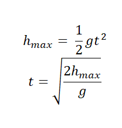

Drugim i jednocześnie ostatnim ruchem z tej grupy jest rzut pionowy w górę. Jest to ruch jednostajnie opóźniony z prędkością początkową różną od 0. Na maksymalnej wysokości ciało zatrzymuje się i spada swobodnie.
Można udowodnić, że czas wznoszenia na maksymalną wysokość jest taki sam, jak spadku swobodnego z tej wysokości.
Obliczenia z lewej strony odnoszą się do rzutu pionowego w góre, a z prawej do spadku swobodnego.

